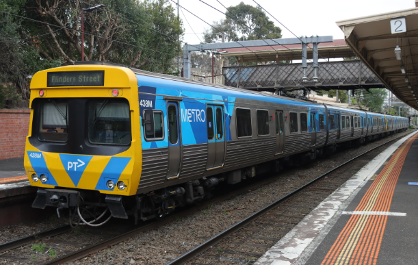

Introduced: 1981–1988
Built by: Commonwealth Engineering, Dandenong
Number built: 570 carriages (forming 95 six-car sets at peak)
Operator: Now run by Metro Trains Melbourne, some carriages have gone through 6 operators
Design: Stainless steel bodies, air-conditioned, three-door layout per side
Power system: 1,500V DC overhead
Car configuration: Typically M–T–M (Motor–Trailer–Motor) pairs
Top speed: Around 115 km/h
Length per 3-car set: ~72 meters
